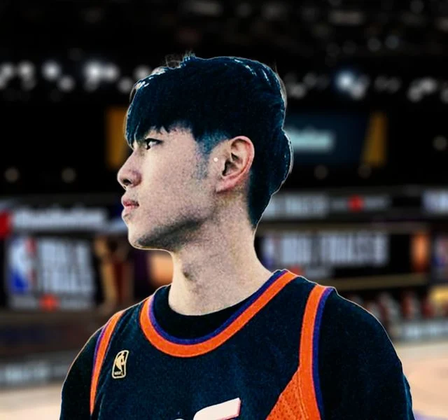
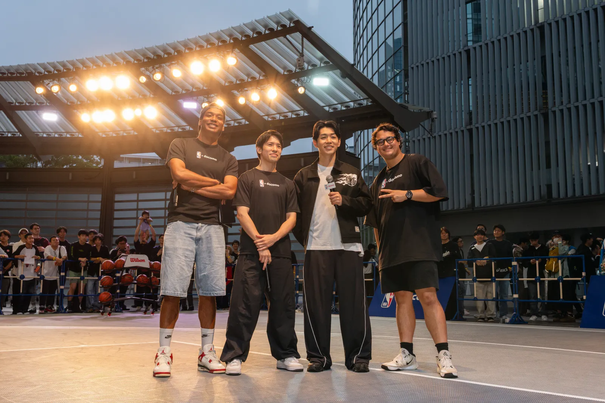

名古屋ダイヤモンドドルフィンズ
アリーナMC
アリーナMC
B.LEAGUE 名古屋ダイヤモンドドルフィンズのアリーナMC。試合の会場を、声で盛り上げる。
PLEASE WELCOME — STARTING 5IVE MEMBER 03
バスケは酸素。
スポーツMC名古屋ダイヤモンドドルフィンズ アリーナMC

B.LEAGUE 名古屋ダイヤモンドドルフィンズのアリーナMC。試合の会場を、声で盛り上げる。
NBA docomo 主催のNBAレジェンド来日イベントに STARTING 5IVE として登壇。NBA公式ファンイベントのリポート動画も制作。
スーパープレイや最新の動向より、選手がスターになるまでの道のりと、人としての魅力に光を当てる。それが持ち味。
映像を本格的に学ぶため、2019年にロサンゼルスの大学へ留学。八村塁がNBAドラフトで指名されたその年に、現地からファン目線でNBAを伝え始めた。チャンネル登録者は2020年11月に10万人を突破し、いまは18.1万人。
現在は名古屋ダイヤモンドドルフィンズのアリーナMCとしてB.LEAGUEの現場に立ちながら、NBA Japan 公式クリエイターとしてNBAの物語を日本に届けている。
NBA Japan の公式クリエイターとして、NBAの試合と選手の物語を日本のファンに届けている。NBA公式イベントへの出演や現地リポートも手がける。

NBA docomo 主催、来日したNBAレジェンドのスペシャルイベントに STARTING 5IVE として出演。
お台場で開かれたNBA公式ファンイベント「NBA HOUSE」の会場に潜入し、各ブースの見どころをリポート。
撮影・編集・ナレーションまで、ぜんぶ本人。NBAのストーリーチャンネルだ。八村塁やルカ・ドンチッチの物語から、日本の高校生を追うドキュメンタリーまで。
八村塁に続くのは本田蕗以？ NBAを目指すライバル・白谷柱誠ジャックとの大濠対決の行方は？
18.3万回再生【映画】誰も知らないスラムダンク "Boogies' Basketballドキュメンタリー2" 49編
10.3万回再生NBA最強の男・ヨキッチに唯一無かった"ある物"を与えた361°とは？ Bambaも初の一日店長に？
3.8万回再生選手でなくても。日本からNBAに辿り着いたもう一つの物語。'AKTRドキュメンタリー'
2.0万回再生※ 登録者数・再生回数は 2026年11月4日時点。
STARTING 5IVE 初期のメンバー紹介回。クリスが聞き手になり、NBAを語り始めた理由から、演技・お笑いへの挑戦、番組づくりへの想いまでをじっくり話している。
子どもの頃からずっと「何かを作りたい、表現したい」タイプ。ゲーム機を紙で手作りして遊んでいたこともあるという。
チャンネルを始めたのは2018年12月、ルカ・ドンチッチの1年目のシーズンが始まった頃。最初はバラエティ系の企画動画を作っていたが、ずっと見てきて自分が得意に話せるNBAを、試合を見に行ける現地から発信しようと決めた。NBAの最初の動画は、マブスのキャップをかぶった自己紹介だった。
選手のストーリーを語る形になった原点は八村塁。ゴンザガ大のエースとしてデューク大を破るほどの活躍を、英語もままならない状態から積み上げてきたこと、現地のフィジカルの中で残してきた結果まで含めた「リアル」を伝えたかったと話している。
バスケをしていた頃にいちばん影響を受けたカーメロ・アンソニーの回は「メロファンとして作らないと」と思って作った一本。デニス・ロッドマンやアレン・アイバーソンの回も強く心に残っているという。
知らないところはハイライトを見直して、記事を読んで、インタビューも聞いて。なるべく間違いのない動画を作ろう、というのは絶対に意識してきた。
— 2024年の配信より（要約）
一方で「誰でも最初の入り口はあるはず」と、見始めたばかりのファンにもあたたかい目線を向けている。
バスケの仕事に誇りを持ったうえで、それだけではない自分も見せたい——「カメラの前で言うのも勇気がいる」と前置きしながら語った想い。ラップでも活躍するリクトの背中を見て、YouTube以外にもうひとつの表現の場をずっと探してきたという。
動画が大きくなるにつれ「声がいいから声優や演技も」と言ってくれる人が増えた。決断は慎重なほうだが「ここはバカになっていい」と、演技の学校に約2年通った。二枚目も三枚目も任され、「どっちもできるやつになれる」と言われたことがうれしかったと振り返る。
出演した舞台『スクール・オブ・ロック』では、ロックへの情熱だけは誰にも負けない先生・デューイ役を務めた。
泣ける作品より、設定がバカバカしくて笑える作品が好き。演技を続けるうちに「やりたいことにいちばん近いのはお笑いかも」と気づき、2024年の配信では、自分でネタを書いてキングオブコントに出場したと話している。
いちばん好きなのはロバートとアルコ＆ピース。老若男女みんなを笑わせるサンドウィッチマンのコントにも憧れる。ロバート秋山の「メモ少年」が大好きで、目標は「レブロン版のメモ少年」。
「バスケがテーマの、笑えるバラエティ番組を日本でつくりたい」
子どもの頃に夢中で見た『ポケモンサンデー』のように、テーマは決まっていても、笑いもあって誰でも楽しめる番組。ESPNをはじめアメリカにはたくさんあるのに、日本にはまだ少ない。STARTING 5IVE が始まったときは「これは新しい風が吹くぞ」と感じたといい、毎週決まった曜日の配信が、ラジオのように誰かの楽しみのひとつになれたらうれしい、と話している。
※ 2024年7月の配信での発言。
アリーナMC・イベントMC・司会から、YouTubeのタイアップまで。バンバへのお仕事のご依頼は、本人の連絡先へどうぞ。